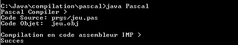

Référence :
Compilateurs, principes, techniques et outils (A.V. Aho, R. Sethi et J.D. Ullman - InterEditions).
Compilateur Pseudo Pascal :
Transformation d'un fichier texte source (.pas) en fichier objet (.obj) compatible avec l'Interpreteur pour Machine à Pile (IMP).
La grammaire d'un Pseudo Pascal (au format GBF)
{ Grammaire d'un Pseudo Pascal }
{
%1 : Donnee --> Pile
%2 : Operateur --> Tampon_Pile_OP
%3 : Operateur --> Pile
%4 : Affectation: POP ID
%5 : WRITE ID
%6 : READ ID
%7 : Chaine de caractŠres
%8 : ID --> Tab_Tampon
%9 : Type --> Tampon_TYP
%10: Construire Tab_ID
%11: ID --> Tampon
%12: if:
%13: JNC else
then:
%14: JMP endif
else:
%15: endif:
%16: while:
%17: JNC endwhile
%18: endwhile:
%19: debut de Fonction
%20: fin de Fonction
%21: RETURN des parametres
sur la Pile
%22: retire les parametres
de la Pile
%23: mettre les parametres
sur la Pile
%24: Affectation:
Tampon --> Tampon_Affect
%25: Appel de Fonction:
%26: Definition des Variables:
Tampon --> Tampon_ID
%27: Fin des d‚finitions
Controle de Type:
%28: type_VOID
%29: type_INTEGER
%30: type_STRING
}
Production = 'Vide' ;
Prog = Declar Fonct Production %27 Instr_Comp '.' ;
Declar = 'VAR' Liste_Id1 ':' Type ';' %10 Declar | 'Vide' ;
Liste_Id1 = 'ID' %8 Liste_Id2 ;
Liste_Id2 = ',' 'ID' %8 Liste_Id2 | 'Vide' ;
Type = 'INTEGER' %9 | 'STRING' %9 ;
Fonct = En_Tete Declar Instr_Comp ';' %20 Fonct | 'Vide' ;
En_Tete = Type_Fonct 'FUNCTION' 'ID' %19 '(' Liste_Param ')' %22 ';' ;
Type_Fonct = 'VOID' | Type ;
Liste_Param = Liste_Id1 ':' Type ';' %10 Liste_Param | 'Vide' ;
Instr_Comp = 'BEGIN' Liste_Instr 'END' ;
Liste_Instr = Instr ';' Liste_Instr | 'Vide' ;
Instr = Instr_Comp
| 'IF' %12 Expr1 'THEN' %13 Instr
'ELSE' %14 Instr Production %15
| 'WHILE' %16 Expr1 'DO' %17 Instr Production %18
| 'RETURN' Expr1
| 'ID' %11 Suite_Id1
| 'WRITE' '(' 'ID' %11 %26 ')' %5
| 'READ' '(' 'ID' %11 %26 ')' %6 ;
Suite_Id1 = '(' %28 Liste_Id1 ')' %23 %25 | ':=' %24 Valeur ;
Valeur = 'CH' %30 %7 | Expr1 Production %4 ;
Expr1 = Simple1 Expr2 ;
Expr2 = Op_Relat %2 Simple1 Production %3
| 'Vide' ;
Simple1 = Terme1 Simple2 ;
Simple2 = Op_Add %2 Terme1 Production %3 Simple2
| 'Vide' ;
Terme1 = Facteur Terme2 ;
Terme2 = Op_Mult %2 Facteur Production %3 Terme2
| 'Vide' ;
Facteur = '(' Expr1 ')'
| 'NOT' %2 Facteur Production %3
| 'NEG' %2 Facteur Production %3
| 'ID' %11 Suite_Id2
| 'NB' %1 ;
Suite_Id2 = '(' %29 Liste_Id1 ')' %23 %25 | Production %29 %26 %1 ;
Op_Relat = '<' | '>' | '=' ;
Op_Add = '+' | '-' | 'OR' ;
Op_Mult = '*' | '/' | 'AND' ;
Exemple du programme de calcul de la factorielle n (fichier fact.pas) :
VAR res,n:INTEGER;
VAR chaine:STRING;
{ Factorielle r‚cursive }
INTEGER FUNCTION fact (n : INTEGER; );
VAR res:INTEGER;
BEGIN
IF n=1 THEN RETURN 1
ELSE
BEGIN
res:=n-1;
RETURN n*fact(res);
END;
END;
{ Programme principal }
BEGIN
chaine:='Valeur n:';
WRITE(chaine);
READ(n);
res:=fact(n);
WRITE(res);
END.
Exemple du jeu "trouver un nombre secret compris entre 0 et 999 en un minimum d'essai" (fichier jeu.pas) :
VAR nb,x:INTEGER;
VAR chaine:STRING;
BEGIN
x:=423;
WHILE NOT( nb=x ) DO
BEGIN
chaine:='Entrer un nombre entre 0 et 999 >';
WRITE(chaine);
READ(nb);
IF nb=x THEN
BEGIN
chaine:='Bravo vous avez gagner !!!';
WRITE(chaine);
END
ELSE
IF nb < x THEN
BEGIN
chaine:='Plus haut...';
WRITE(chaine);
END
ELSE
BEGIN
chaine:='Plus bas...';
WRITE(chaine);
END;
END;
END.
Exemple du programme de calcul du maximum entre deux nombres (fichier max.pas) :
VAR i,j,max: INTEGER;
VAR chaine: STRING;
{ Calcul le maximum de i et j }
INTEGER FUNCTION maximum (i,j : INTEGER; );
BEGIN
IF i < j THEN RETURN j
ELSE RETURN i;
END;
{ Programme principal }
BEGIN
chaine:='Valeur i:';
WRITE(chaine);
READ(i);
chaine:='Valeur j:';
WRITE(chaine);
READ(j);
chaine:='Maximum >';
WRITE(chaine);
max:=maximum(i,j);
WRITE(max);
END.

Sources et code du compilateur Pseudo Pascal : pascal.zip.